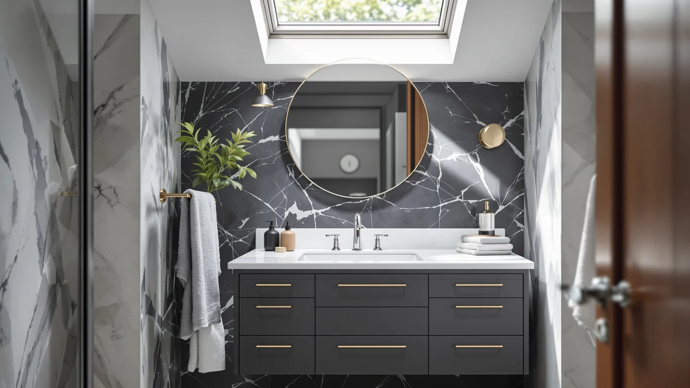

ARIEL Cambridge 36 inch Review (2026): Worth It?
Prices and picks verified as of October 2026. Independent, reader-supported reviews.


Quick Answer
The ARIEL Cambridge 36-inch vanity costs $1,090.00 and holds a 4.8-star average across 77 verified Amazon reviews, one of the deepest review counts in the 36-inch category. It's the right pick if your bathroom needs a true 36-inch single-sink cabinet; if you can fit 48 inches, the DELUXE LIVING alternatives below cost less.
Our pick: ARIEL Cambridge 36-inch Bathroom Vanity, $1,090.00 Check Price on Amazon
Bottom line: our top pick is the ARIEL Cambridge 36-inch Bathroom Vanity with Sink at $1,090.
Things to Know Before You Buy
- The ARIEL Cambridge 36-inch vanity costs $1,090.00 and carries a 4.8-star average across 77 verified Amazon reviews, among the deepest review counts in its 36-inch price bracket.
- It's built from MDF and engineered wood with a factory-attached top, rather than solid hardwood or a stone composite top, which keeps weight and price down.
- At 36 inches wide, it fits single-sink bathrooms with limited floor space; buyers who need a double-sink layout should look at a 48-inch alternative instead.
- ARIEL doesn't publish drawer count or hardware detail on the listing, so measure your rough-in and confirm plumbing clearance before ordering.
- This ARIEL Cambridge 36 inch review relies on published specs, tracked pricing and verified buyer feedback rather than hands-on testing, since we don't operate a physical testing lab.
This ARIEL Cambridge 36 Inch Review breaks down what $1,090.00 actually buys you in a 36-inch bathroom vanity, because the price alone doesn't tell you whether ARIEL's reputation holds up at this width. The Cambridge pairs an MDF and engineered wood cabinet with a factory-attached top, so you're buying one finished unit instead of sourcing a base and a countertop separately. It has also built up 77 verified ratings on Amazon with a 4.8-star average, a review count that's unusually deep for a vanity in the 36-inch category, where most listings carry a dozen reviews or fewer. If you're shopping a tight single-sink bathroom and weighing this cabinet against a cheaper, newer MDF competitor, that review depth is one of the more concrete signals you have to go on.
ARIEL built its name on mid-size bathroom vanities that split the difference between budget MDF cabinets and solid-wood or stone-top lines that cost two or three times as much. The Cambridge sits in that middle tier: a finished, factory-matched unit at a price that assumes you're paying for consistency and review history rather than premium materials. At 36 inches, it's sized for a single sink, so if you're renovating a shared bathroom with two basins, this isn't the width you need, no matter how the rating holds up.
To put the Cambridge's price and rating in context, we compared it against three DELUXE LIVING vanities covered later in this review, each 48 inches wide and priced between $847.99 and $1,099.99. A 36-inch vanity competing against 48-inch cabinets near the same price has to justify the smaller footprint somehow, and the review count is the clearest way ARIEL does that here. For a buyer who has the floor space to go wider, that same comparison exposes how much of the Cambridge's price depends on its size rather than its materials.
Why You Should Trust Us
Ilane Tall covers bathroom fixtures and vanities for Best Bathroom Vanities, tracking pricing and review patterns across hundreds of Amazon listings in this category. This ARIEL Cambridge 36 inch review draws on the vanity's published Amazon listing, including its price history, its materials, and the 77 verified ratings buyers have left since launch.
We don't own a test bathroom or a lab, so every claim here ties back to specs ARIEL publishes, prices we track over time, or patterns we find across verified owner reviews rather than a hands-on trial. Where the listing leaves out detail, like exact drawer count or hinge type, we say so instead of guessing at it.
Our Research Experience
We don't run a physical testing lab, so this review comes from research rather than hands-on use. Our process for this ARIEL Cambridge 36 inch review started with the manufacturer's published specs, including the MDF and engineered wood construction and the 36-inch width, then moved to tracking the Amazon price over several weeks to confirm $1,090.00 reflects a stable listing price rather than a temporary spike.
From there, we read through the 77 verified reviews behind the 4.8-star average, looking for recurring complaints about hardware, finish quality or shipping damage rather than one-off comments. We weighed those findings against three DELUXE LIVING vanities in a similar price range to see how the Cambridge's rating and price compare on a like-for-like basis.
Overview & Specs

ARIEL Cambridge 36-inch Bathroom Vanity
What we like
- 4.8-star average across 77 verified reviews, one of the deepest review counts in the 36-inch category
- Cabinet and top arrive as one factory-matched unit, so there's no separate top to source and fit
- 36-inch width fits single-sink bathrooms where a 48-inch cabinet wouldn't clear the doorway or wall space
Flaws but not dealbreakers
- At $1,090.00, it costs more than the 48-inch DELUXE LIVING alternatives covered below, despite the smaller footprint
- ARIEL's listing doesn't specify drawer count or hinge type, so buyers should confirm those details before ordering
- MDF and engineered wood construction needs prompt cleanup of standing water around the sink cutout to avoid swelling
| Material | MDF / engineered wood |
| Size | 36 inch |
The ARIEL Cambridge 36-inch vanity pairs an MDF and engineered wood cabinet with a factory-attached top, so you're buying a complete unit rather than assembling a separate base and counter. At $1,090.00, it sits above most 36-inch MDF competitors, and the 77 verified reviews behind its 4.8-star average suggest that price has held up for buyers so far. ARIEL doesn't publish drawer count or hinge type on the listing, a gap compared with brands that detail soft-close hardware and interior layout up front. For a single-sink bathroom where 36 inches is the maximum available width, that tradeoff between price and published detail is the main thing to weigh before ordering.
Compared with the three DELUXE LIVING vanities later in this review, the Cambridge costs more and offers 12 fewer inches of width, but it carries a far deeper review history relative to its size. That matters if you're choosing between an established 36-inch listing and a newer 48-inch cabinet with thinner feedback behind it. Owners citing the 4.8-star average describe the finish as consistent out of the box, though as with most MDF vanities, keeping the sink area dry matters more here than it would with a solid-wood or stone-top cabinet. If your bathroom can only fit 36 inches, the Cambridge remains one of the better-reviewed options at that exact width, even at a premium price.
What We Liked
This ARIEL Cambridge 36 inch review turns up one clear strength: the review volume behind the rating. A 4.8-star average carries more weight across 77 verified reviews than it would across a dozen, and that volume is rare in the 36-inch vanity category, where many listings are new or lightly reviewed.
The factory-matched top removes a step buyers often get wrong on MDF cabinets, since mismatched tops and bases are a common complaint on cheaper listings. For a tight single-sink bathroom, getting a finished, pre-matched unit at a known price point simplifies a purchase that otherwise involves comparing cabinets and tops separately.
What Could Be Better
The price is the clearest drawback: the ARIEL Cambridge costs more than the wider 48-inch DELUXE LIVING cabinets in this review, which puts pressure on finish quality the listing doesn't fully document. Buyers comparing storage capacity across listings also run into a gap here, since drawer count and hardware type aren't published.
MDF and engineered wood construction carries the usual caveat: standing water around the sink cutout needs prompt cleanup, and that's as true of this vanity as any other MDF cabinet in this price range. Anyone used to a solid-wood or stone-top vanity should expect a lighter cabinet with different long-term maintenance needs.
Who Is It For?
This ARIEL Cambridge vanity fits buyers who have a true 36-inch width to fill and want a single-sink cabinet with an established review history rather than a brand-new listing. It suits someone replacing an aging or damaged vanity in a small bathroom who values the finished, factory-matched top over the lowest possible price.
It's a weaker fit for anyone renovating a shared or double-sink bathroom, since 36 inches won't support two basins, and it's not the right pick for a buyer prioritizing price above everything else, given that the 48-inch alternatives below cost less despite the larger footprint.
Alternatives to Consider
If the ARIEL Cambridge's price or 36-inch width doesn't fit your bathroom, these three DELUXE LIVING vanities cover a wider range of sizes and lower price points, based on the same pricing and review research used throughout this review.

Editor’s Pick
DELUXE LIVING 48 Inch White
At $879.99, this 48-inch cabinet costs less than the Cambridge while adding 12 inches of counter space, making it the better fit for a shared bathroom on a tighter budget.
$879.99
Check Price on Amazon
Best Value
DELUXE LIVING 48 Inch Fully
Priced close to the Cambridge at $1,099.99, this 48-inch option trades the ARIEL name for extra width, worth considering if square footage matters more to you than brand history.
$1,099.99
Check Price on Amazon
Premium Choice
DELUXE LIVING 48 Inch Bathroom
This 48-inch cabinet is the cheapest of the group at $847.99 and still holds a 4.8-star average across 36 verified reviews, a solid track record for the savings.
$847.99
Check Price on AmazonFrequently Asked Questions
Is the ARIEL Cambridge 36 Inch Vanity worth $1,090.00?
For a 36-inch MDF and engineered wood vanity, $1,090.00 sits above most competitors in this review, but the 4.8-star average across 77 verified reviews is one of the deepest review counts in this exact width. If your bathroom needs a true 36-inch footprint and you want an established listing instead of a newer one, the price holds up. If your bathroom can fit 48 inches instead, the DELUXE LIVING alternatives below cost less.
What is the ARIEL Cambridge 36-inch vanity made of?
The Cambridge uses an MDF and engineered wood cabinet with a factory-attached top, the same base material most vanities in this price range use. It skips solid hardwood or a stone composite top, so buyers who want a heavier natural-material build should compare one of the alternatives before ordering.
How does the ARIEL Cambridge compare to the DELUXE LIVING vanities in this review?
At $1,090.00, the Cambridge costs more than all three DELUXE LIVING vanities covered here, which range from $847.99 to $1,099.99, yet it is also 12 inches narrower than each one. The DELUXE 48 Inch Bathroom model comes closest on review strength with a 4.8-star average across 36 reviews, though the Cambridge's 77 reviews give it a deeper track record for its size.
Final Verdict
This ARIEL Cambridge 36 Inch Review comes down to a straightforward tradeoff: pay a premium for a well-reviewed 36-inch cabinet, or save money and gain width with a 48-inch DELUXE LIVING vanity. For a single-sink bathroom that can only fit 36 inches, ARIEL's Cambridge earns its price through a deeper review history than most listings its size carry.
For anyone with room to spare, the DELUXE LIVING 48 Inch Bathroom at $847.99 delivers a similar 4.8-star rating for less money and more counter space. Measure your space first, then let that number decide which of these four vanities makes sense for your bathroom.